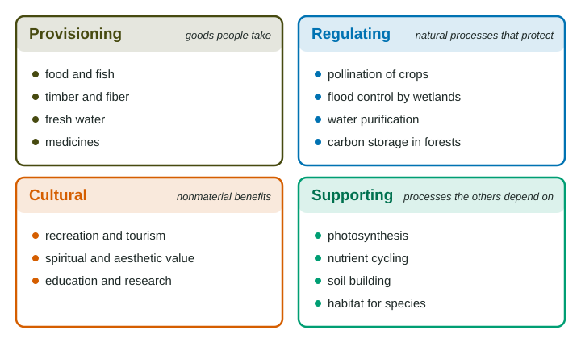

Every day you use things an ecosystem made or did for you: the oxygen from photosynthesis, the water filtered through forest soil, the apples pollinated by bees. Ecosystem services are the benefits people get from working ecosystems. Naming them helps answer a question the exam asks often: what does it cost when people damage an ecosystem?
Four kinds of ecosystem service

| Kind | What it is | Examples |
|---|---|---|
| Provisioning | goods people take and use | food, fish, timber, fiber, fresh water, medicines |
| Regulating | natural processes that protect people and keep conditions stable | pollination of crops, purifying water, controlling floods and erosion, storing carbon |
| Cultural | nonmaterial benefits | recreation, tourism, beauty, spiritual value, education and research |
| Supporting | processes the other three depend on | photosynthesis, nutrient cycling, soil formation, habitat |
One ecosystem gives several services at once. A coral reef provides fish (provisioning), breaks waves before they reach the shore (regulating), draws snorkelers (cultural) and cycles nutrients through its food web (supporting).
A quick way to sort them: ask "Is it a thing people take?" (provisioning), "Is it a process that protects people?" (regulating), "Is it an experience or a value?" (cultural), or "Is it the background work that keeps the system running?" (supporting).
The cost of disrupting an ecosystem
When people clear, drain or pollute an ecosystem, they usually gain something: timber, farmland, a building site. They also lose services that were free. Those services then have to be replaced at a cost, or the people who relied on them do without. This cost is often paid by someone else: the town downstream that floods, the farmer whose crops are no longer pollinated.
- Clearing a forest gives timber and land, but removes carbon storage, water filtering, erosion control and habitat.
- Draining a wetland gives building land, but removes flood storage, water cleaning and fish nurseries.
- Losing wild pollinators can cut the yield of crops that need them, or force growers to rent honeybee hives.
Worked example. Blueberry farms near natural habitat, with wild bees, yield 8,000 kg per hectare. Farms far from habitat yield 5,000 kg per hectare. What is the percent change from far to near?
Setup: . The far farm is the starting value, so it goes in the denominator, and the difference is in brackets so it is worked out before dividing.
Answer: . Pollination by wild bees, a regulating service, is worth a 60% higher yield for this crop in these invented data.
Putting a value on services
Because services have no price tag, a decision based only on market prices can undervalue an ecosystem. One way cities have shown the value is to compare costs: protecting forest around a reservoir can cost far less than building and running a filtration plant to clean the same water. That comparison turns a regulating service into dollars.
Protecting a service also has costs and trade-offs. Land set aside around a reservoir cannot be built on, and nearby towns may lose tax income. A strong exam answer names both the benefit and the cost, and who bears each.
On the exam
- Classify a service correctly, using the four kinds, and say why (a good, a protective process, an experience, background work).
- For an economic cost, name who loses money and how: "Fewer flowers are pollinated, so fewer apples form, so growers earn less or must rent hives."
- For an ecological cost, name the service lost and its effect on the ecosystem.